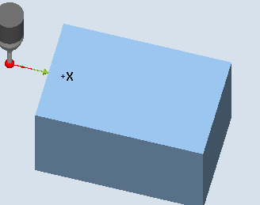

Mit dieser Messvariante kann ein Werkstückmesstaster in einer vom Anwender ausgewählten Achse und Richtung, an einer senkrecht dazu stehenden Referenzfläche abgeglichen werden. Dies kann z. B. an einem Werkstück erfolgen.
Der ermittelte Triggerpunkt wird in das adressierte Kalibrierungsdatenfeld übernommen.
Der Messtaster fährt in der gewählten Achse und Richtung an die Referenzfläche.
Der ermittelte Kalibrierwert (Triggerpunkt + Lageabweichung) wird in das adressierte Kalibrierdatenfeld übernommen. Aus den Werkzeugdaten des Messtasters wird der Messtasterkugelradius, umgerechnet auf den Durchmesser, ebenfalls mit in das Kalibrierdatenfeld geschrieben.
|  Abgleich: Radius an Kante (CYCLE976), Abgleichrichtung |
Der Messtaster muss als Werkzeug aktiv sein.
Werkzeugtyp des Messtasters:
3D Multi-Taster (Typ 710)
Monotaster (Typ 712)
Sterntaster (Typ 714)
| Hinweis |
In Verbindung mit Monotaster und Sterntaster ist eine SPOS-fähige Spindel erforderlich. |
Der Messtaster ist auf Messhöhe ungefähr im Abstand des Messweges (DFA) gegenüber der Kante zu positionieren.
Die Messtasterkugelmitte steht um den Abstand des Messweges vor der Referenzkante.
Siehe auch:
Abgleich: Radius an Kante (CYCLE976)